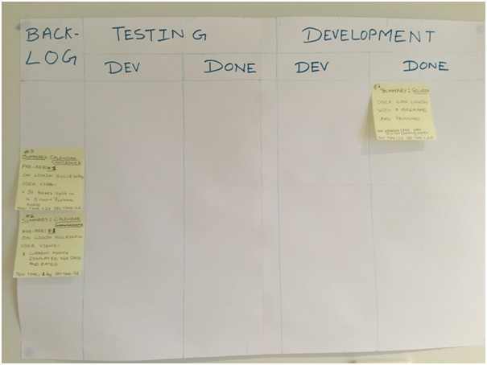
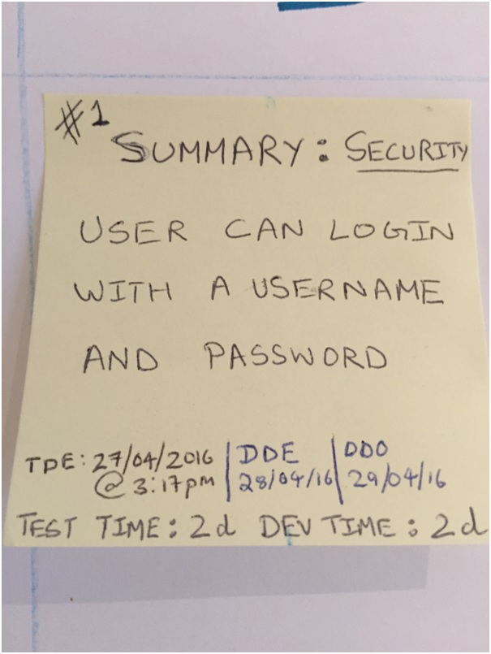
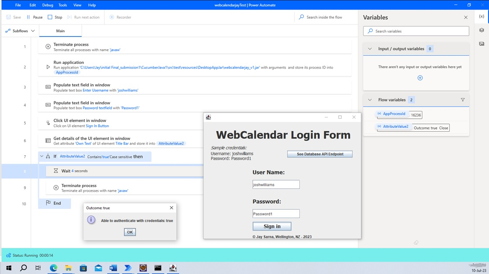
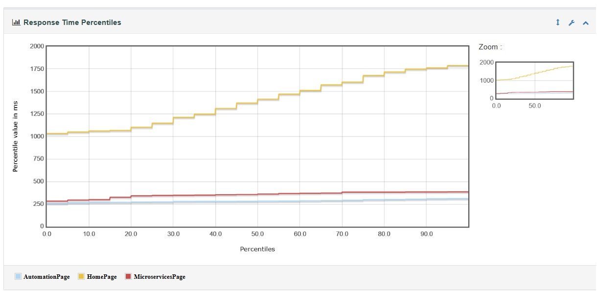
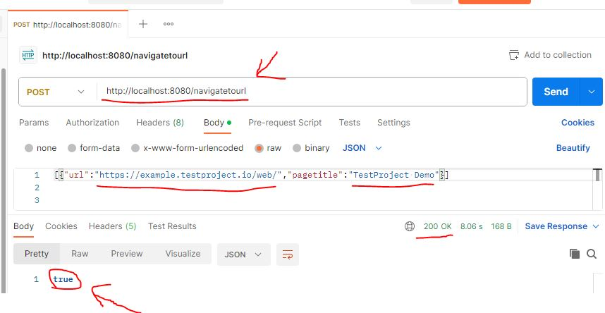
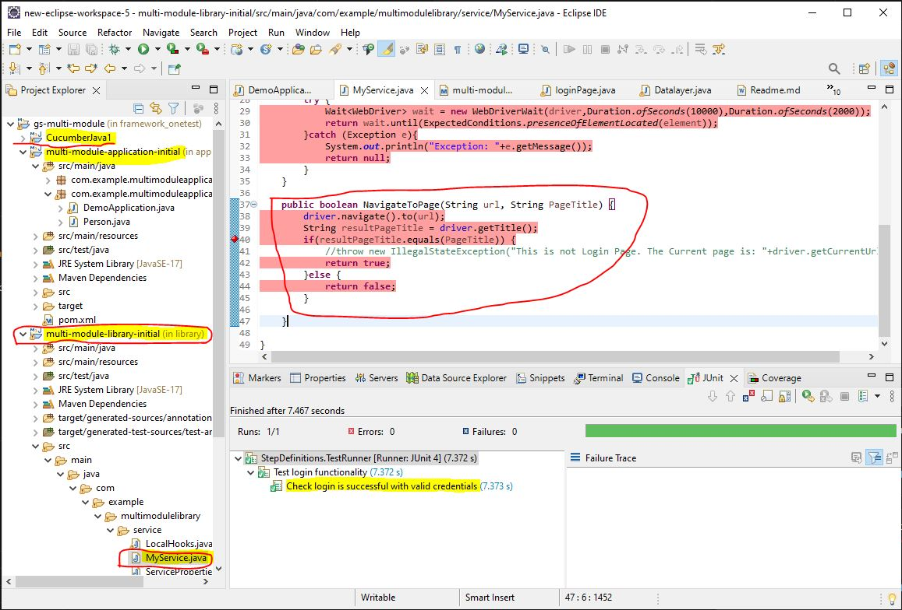

Table of Contents1. PURPOSE 2. WHAT THIS APPLICATION DOES 3. WHY IS IT IMPORTANT? - Web Browser Automation via Cucumber-Java-Selenium 4. WHY IS IT IMPORTANT? - Desktop App Automation via Power Automate (Low Code) 5. TEST DRIVEN DEVELOPMENT (TDD) PERFORMED WITH RUBY PROGRAMMING LANGUAGE 6. TDD ON MOBILE PLATFORM 7. NON-FUNCTIONAL TESTING IMPLEMENTED 8. USE OF FRAMEWORKS Back to Top |
||||
1. PURPOSETo demonstrate agile "Test Driven Development" (TDD) of a web application on browser and mobile platforms using cucumber, JUnit, Selenium RC, Eclipse and Appium.A one line summary of these tools is as below: ECLIPSE : A GUI that allows coding and use of following technologies. CUCUMBER : framework that allows writing code to defined acceptance driven tests. JUNIT : API that provides functions to test via code. E.G. AssertEquals("a","a") will return true. SELENIUM RC : API that provides functions to drive html pages. E.G. browser.findelement(byID ("submit")).click() would click submit button. APPIUM : An application server like TOMCAT for mobiles. It hosts mobile devices (iOS and Android), so tests can be run on them. The development utilised agile software development as evidenced by the board below:

Back to Table Of Contents |
||||
2. WHAT THIS WEB APPLICATION DOESThis application is about setting up an online web calendar. As an example, below is one user story from sprint 1, for logon, which has been fully implemented with added security:

The above story implemented the following: 1. Takes user input in the form of username and password, 2. On selecting submit button, validates the credentials via checking a MySql database. 3. If the credentials authenticate successfully, it presents a welcome user message. 4. If the credentials do NOT authenticate successfully, it presents a "invalid credentials" welcome message. Back to Table Of Contents |
||||
3. WHY IS IT IMPORTANT - Cucumber-Java-Selenium web browser automationThis application has been developed entirely using test driven development.The steps followed were to first develop the cucumber scripts to drive selenium tests followed by writing the code. In particular:
Back to Table Of Contents |
||||
4. WHY IS IT IMPORTANT - Desktop App Automation via Power Automate (Low Code)Automating testing on web applications is just one aspect of quality assurance outcomes. Desktop applications is another major use case.So I created a desktop version of this web calendar application and automated its testing using Low code Microsoft Platform 'PowerAutomate':

|
||||
5. TEST DRIVEN DEVELOPMENT USING RUBY PROGRAMMING LANGUAGEThe same Selenium tests were also written and run using Ruby language on Ruby Mine IDE softwareThe steps followed were:
Back to Table Of Contents |
||||
6. TEST DRIVEN DEVELOPMENT ON MOBILE PLATFORMThe same Selenium tests were also run on an android device with operating system version 5.1.1The steps followed to setup the tests for the mobile were:
Back to Table Of Contents |
||||
7. NON-FUNCTIONAL TESTINGSECURITY IMPLEMENTED (OWASP Top 10)In terms of Security, the application implements: a. Captcha to verify that the user is not one of many robots generated by say a performance testing tool. b. Validation of user input to verify that it is not an attempt to delete tables. Refer "A1-Injection" (SQL) in OWASP top ten. b. Re-validation of user credentials before display of each page requiring privileged access, so that only authorised requests for pages are accepted. Refer "A7- Missing Function Level Access Control" in OWASP top ten. PERFORMANCE TESTING USING JMETERJmeter was used to baseline performance for a selection of pages from the web application, under load of 20 simultaneous users (one ramping up every second):  Back to Table Of Contents |
||||
8. USE OF FRAMEWORKSFrameworks use to hold common code for reuse, across the test team Note: My framework is in java and is setup in a multi module (three) project in Eclipse. The three independant modules hold code, host code and test code, respectively: 1. Library module: All the reusable code is in it. 2. Application module: It is a Spring Boot microservice sits infront of library. Anyone with access to microservice can use its API to run Selenium tests without ever dealing with browsers. 3. Cucumber-Junit module: For testing puposes, my framework also has a module that consumes the Application Module. Following is evidence of the Application Module working via API use in Postman:  Following is evidence of Reusable code in library, which is available to application module as a service:  Note: The above screenshot also shows successful running of cucumber Junit tests in the bottom panel. The Github Repository is linked in Login page (though this one is a private repository). Back to Table Of Contents |